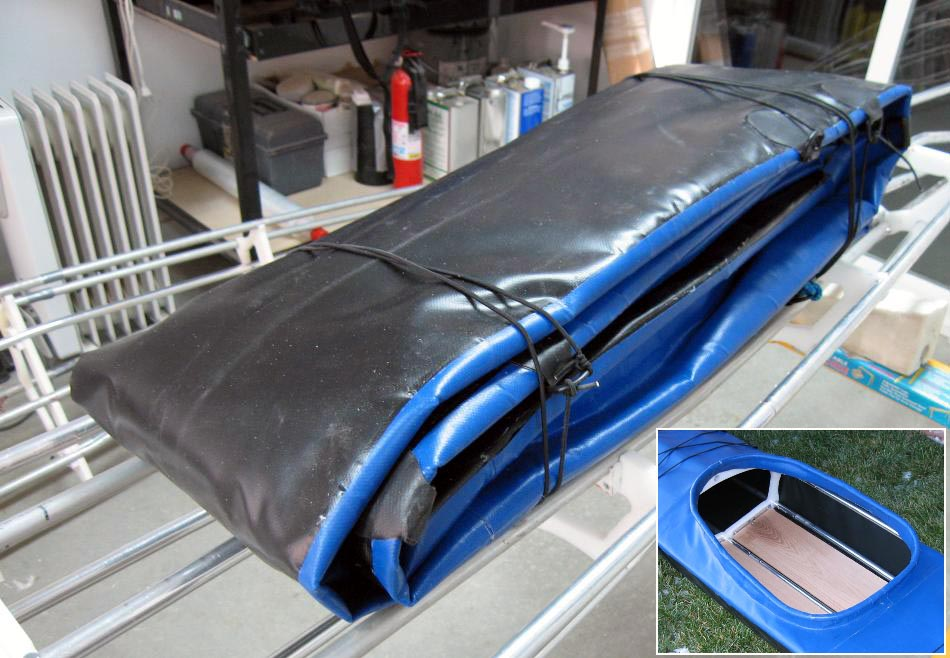

| Sea Glider Skin | Menu Previous Page Next Page |
|
 The Sea Glider's 18oz. PVC skin weighs 12 lbs. The full length YKK #10 marine plastic zipper is covered with a Velcro attached flap. The Sea Glider skin has a two piece freestanding aluminum coaming like that of the Sea Rider. The 24 X 16in coaming comes apart for folding with the skin. |
|